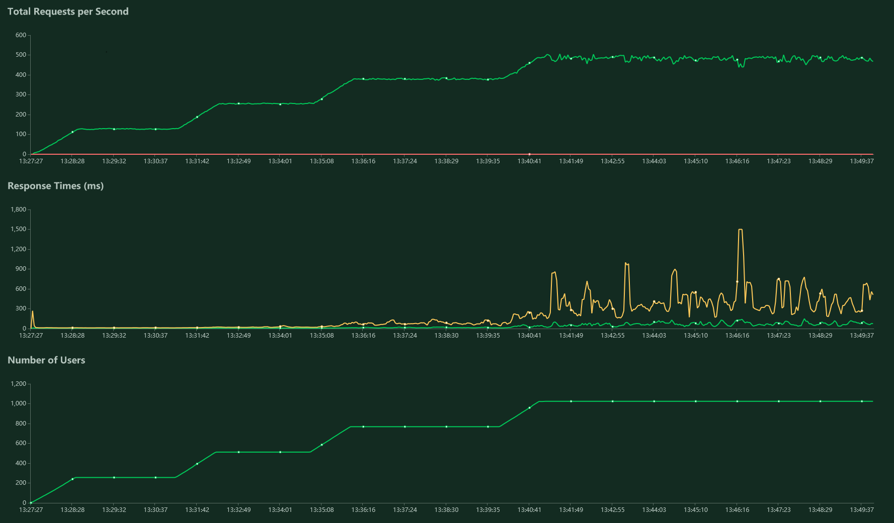

Проект Transfer

Восстановил работоспособность проектика от 2020 года, который писал как небольшое тестовое.
Смысл задачи простой – классика банковских переводов с одного счёта на другой. Подвох, который у этой задачи есть при решении в лоб с простой таблицей баланса счетов – возможность дедлока при одновременных переводах.
Тогда я попадал на такое тестовое не впервые. Решил вместо мутируемого состояния положить в основу event sourcing. Получилось интересно. Как бонус такого подхода: хранение полной истории счёта уже включено из коробки.
Прогнал вчера нагрузочные тесты Locust’а, работает даже спустя 5 с копейками лет, надо было только прибить корректные версии образов :)